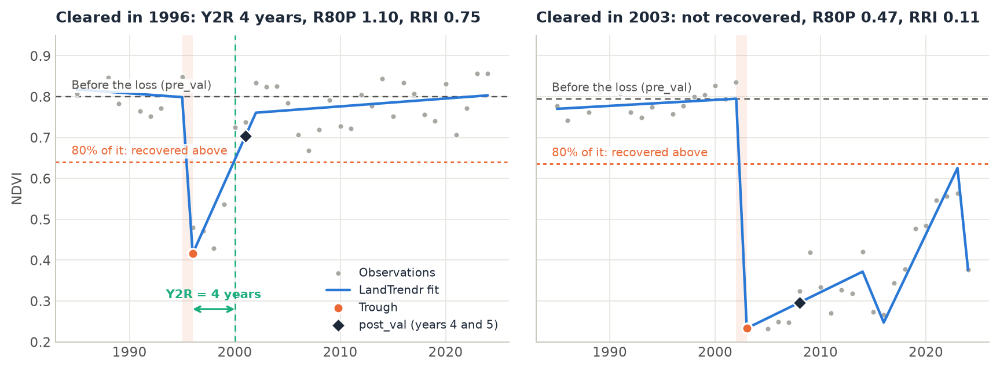
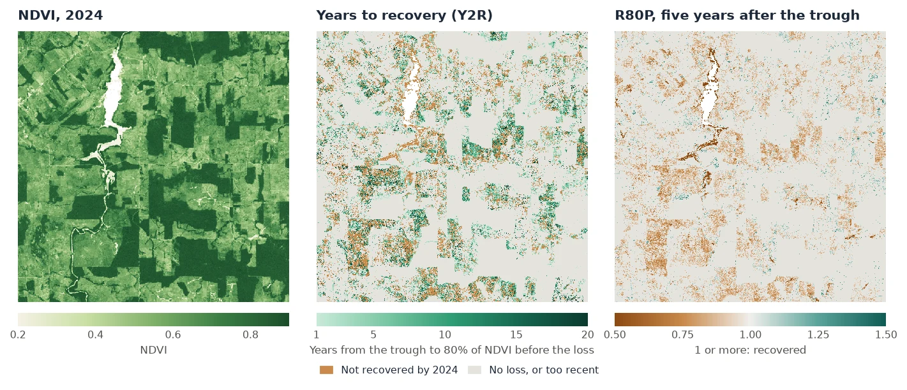

Recovery after Disturbance¶
Finding the year a forest was cleared or burned is half the work. The other half is what came after: did the vegetation come back, how fast, and how far? zeit.recovery_metrics measures this for every pixel with the spectral recovery metrics used in the forest literature: years to recovery (Y2R), R80P, RRI, ARI and YrYr.
(time, y, x) with the disturbance years
pre_val), and the dotted line is 80% of it: the pixel counts as recovered once it is back above it. Left: cleared in 1996, back above the line 4 years after the trough. Right: cleared in 2003 and kept open; it never got back above the line.How it works¶
For each pixel, a disturbance runs from its start, the last year before the loss (an event's yod), to its trough, the year the index bottoms out (yod + duration). Every metric is measured from these two years:
- Before.
pre_valis the mean of thepre_years(2) years up to the start. - The loss.
dist_valis the value at the trough, andmagnitudeispre_val - dist_val. - After.
post_valis the best of the two years at thehorizon(years 4 and 5 after the trough, as in Frazier et al. 2018), so that one noisy year does not decide. - The metrics. From these values:
| Metric | Definition | Reads as |
|---|---|---|
ari |
post_val - dist_val |
Absolute recovery, in the units of the index. |
rri |
ari / magnitude |
The share of the loss regained by the horizon (Kennedy et al. 2012). 1 = all of it. |
r80p |
post_val / (0.8 * pre_val) |
1 or more: recovered by the horizon (White et al. 2017). |
yryr |
(value at t0 + 5 - dist_val) / 5 |
The mean yearly regrowth over the first five years. |
y2r |
years from the trough until the value first reaches 0.8 * pre_val |
Years to recovery (White et al. 2017). NaN: not recovered by the last year. |
The 80% and the 5 years are the defaults of the literature; target and horizon change them.
Step by step¶
The data are the same 40 years of annual Landsat NDVI over Rondônia, Brazil, as in the LandTrendr tutorial: NDVI x 10000, one band per year from 1985 to 2024, 1671 x 1686 pixels.
1. Find the disturbances¶
Recovery is measured after an event, so first segment the stack and pick each pixel's greatest loss, as in the LandTrendr tutorial:
import zeit
ndvi = zeit.load_raster("LT_Stack_NDVI_Rondonia.tif", validate="landtrendr")
years = ndvi.time.dt.year.values # 1985 ... 2024
lt = zeit.landtrendr(ndvi) # direction="loss": NDVI drops
loss = zeit.extract_events(lt, min_magnitude=2000) # the greatest drop of at least 0.2 NDVI
# no loss that starts in the first year, and a clear signal over the fit's noise
confident = (loss.yod > years[0]) & (loss.dsnr >= 3)
2. Measure the recovery¶
rec = zeit.recovery_metrics(lt, loss.where(confident))
list(rec.data_vars)
# ['yod', 'trough', 'pre_val', 'dist_val', 'magnitude', 'post_val', 'ari', 'rri', 'r80p', 'yryr', 'y2r']
On a LandTrendr result the metrics are measured on the fitted trajectory, the line through the vertices, not on the yearly values. A pixel whose event was masked out (yod 0 or NaN) gets NaN metrics. Without events, recovery_metrics(lt) picks each pixel's greatest loss itself, with the same sort_by, min_magnitude and min_duration as extract_events.
The result is an xarray.Dataset of (y, x) maps on the grid and CRS of the stack. On the 2.8 million pixels of this scene, the three calls take about 2.5, 2 and 1.5 seconds.
3. Read the maps¶

seen = (rec.trough > 0) & (rec.trough <= years[-1] - 5) # the horizon is in the data
recovered = seen & rec.y2r.notnull()
print(float(recovered.sum() / seen.sum())) # 0.575
print(float(rec.y2r.where(recovered).median())) # 6.0 years
print(float(rec.r80p.where(seen).median())) # 0.90
Over the whole scene there are 501,265 losses at least five years old. 57.5% of them were back above 80% of their former NDVI by 2024, after a median of 6 years. Five years after the trough, the median R80P is 0.90, and only a quarter of these pixels (24.4%) are at 1 or more. The pixels below 1, in brown on the maps, include the clearings kept as pasture.
Some things to keep in mind when reading the maps:
- NaN means two things for
y2r. It is NaN where there is no event, and also where the pixel has not recovered by the last year. Tell them apart withrec.yod > 0, as above. - Recent events.
post_val,ari,rri,r80pandyryrare NaN when the series ends before the horizon. A loss in 2021 has no R80P yet in a series that ends in 2024. y2r= 0 means that the value never fell below the target: the loss was smaller than 20% ofpre_val.- Spectral recovery is not forest recovery. NDVI saturates early: young regrowth, a pasture in the wet season or a crop can reach 80% of a forest's NDVI. NBR or the tasseled cap wetness follow forest structure for longer, and White et al. (2017) recommend NBR.
Save the maps as GeoTIFFs:
4. Look at one pixel¶
zeit.landtrendr takes a single pixel's series, and recovery_metrics takes its result. This is the regrown pixel in the figure at the top:
pixel = ndvi[:, 1006, 1065]
fit = zeit.landtrendr(pixel, fitted=True)
m = zeit.recovery_metrics(fit, min_magnitude=2000)
{k: round(float(v), 2) for k, v in m.data_vars.items()}
# {'yod': 1995.0, 'trough': 1996.0, 'pre_val': 7996.6, 'dist_val': 4159.17, 'magnitude': 3837.43,
# 'post_val': 7031.79, 'ari': 2872.62, 'rri': 0.75, 'r80p': 1.1, 'yryr': 574.52, 'y2r': 4.0}
The NDVI fell from 0.80 to 0.42 in 1996, and five years later 75% of that loss had come back (RRI 0.75), at a mean of 0.057 NDVI per year (YrYr). It crossed 80% of 0.80 in 2000, 4 years after the trough.
5. Other events and other indices¶
The events can come from any algorithm. With a series instead of a LandTrendr result, pass events: an extract_events result (its yod and duration), or a map of start years, whose trough is then the next year. The series must have one value per year: build annual composites first (zeit.build_annual_composites).
# the yearly values themselves, after LandTrendr's events
raw = zeit.recovery_metrics(ndvi, loss.where(confident))
# breaks found by CCDC, measured on an annual series
ev = zeit.extract_events(zeit.ccdc(bands), band="nir", event_type="loss")
rec = zeit.recovery_metrics(annual_nbr, ev)
On the yearly values, one good year is enough to count as recovered. On this scene the median Y2R is 2 years on the values and 6 years on the LandTrendr fit, and the median R80P is 0.99 against 0.90. Use the fit when it is there.
For an index that rises with the disturbance (SWIR bands, brightness), use event_type="gain" with basis="magnitude". The pixel then counts as recovered once target of the change has come back, and r80p is that share (rri / target). basis="magnitude" also works for an index that falls with the disturbance but can be negative.
Parameters¶
| Parameter | Default | Effect |
|---|---|---|
events |
None |
The disturbances: an extract_events result, or each pixel's start year (0 or NaN for none). LandTrendr results pick their own when None. |
target |
0.8 |
The fraction of pre_val that counts as recovered. |
horizon |
5 |
Years after the trough at which post_val, ari, rri, r80p and yryr are measured. |
pre_years |
2 |
Years averaged for pre_val. |
basis |
"pre_value" |
"pre_value": recovered at target * pre_val. "magnitude": recovered once target of the loss came back, for any index. |
event_type |
LandTrendr's direction | "loss", or "gain" for an index that rises with the disturbance (needs basis="magnitude"). |
sort_by, min_magnitude, min_duration |
as extract_events |
LandTrendr without events: which event to measure. |
All parameters, and the inputs from disk with chunks, are in the API reference. In Janus, the same metrics are the Recovery (LandTrendr) tool.
About this implementation
The metrics follow their published definitions. RecoverMetricsR (R) computes RRI, R80P and YrYr in the same way; the two differ in where the recovery is looked for: RecoverMetricsR takes the best of the 5 years after the trough and counts the years to recovery from the year after it, while Zeit takes the best of years 4 and 5 (Frazier et al. 2018) and counts from the trough. On steadily regrowing series, where these choices give the same answer, the two agree to 6e-8 (float32 precision). On 1000 x 1000 pixels and 21 years, RecoverMetricsR takes 52 s and Zeit 0.1 s on one thread. See Against the Original Implementations.
References¶
- Kennedy, R. E., Yang, Z., Cohen, W. B., Pfaff, E., Braaten, J., & Nelson, P. (2012). Spatial and temporal patterns of forest disturbance and regrowth within the area of the Northwest Forest Plan. Remote Sensing of Environment, 122, 117–133. doi:10.1016/j.rse.2011.09.024
- White, J. C., Wulder, M. A., Hermosilla, T., Coops, N. C., & Hobart, G. W. (2017). A nationwide annual characterization of 25 years of forest disturbance and recovery for Canada using Landsat time series. Remote Sensing of Environment, 194, 303–321. doi:10.1016/j.rse.2017.03.035
- Frazier, R. J., Coops, N. C., Wulder, M. A., Hermosilla, T., & White, J. C. (2018). Analyzing spatial and temporal variability in short-term rates of post-fire vegetation return from Landsat time series. Remote Sensing of Environment, 205, 32–45. doi:10.1016/j.rse.2017.11.007